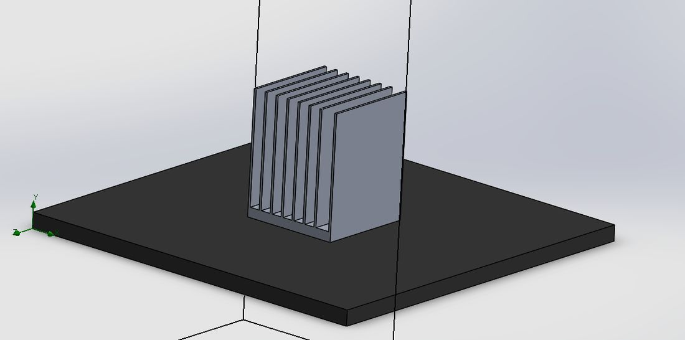
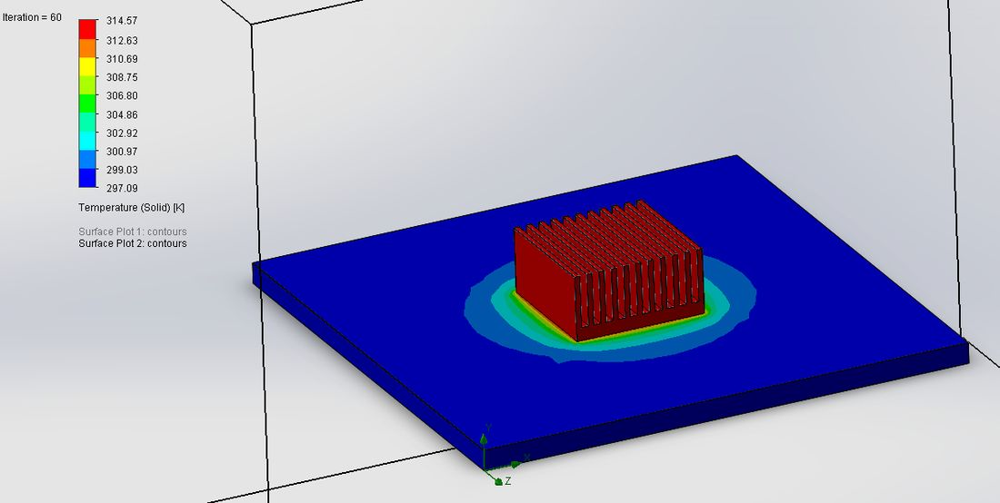
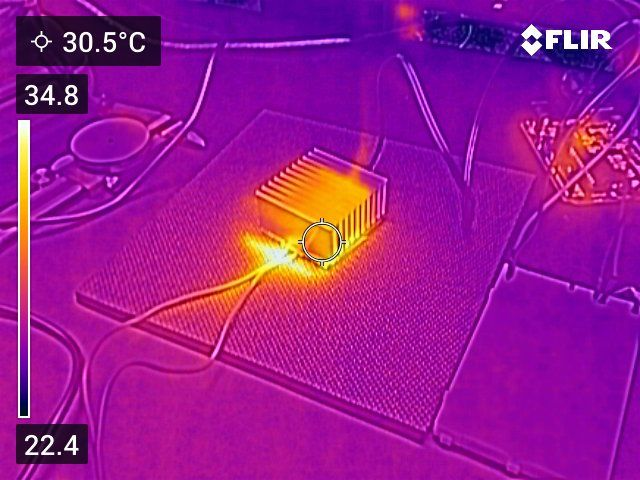
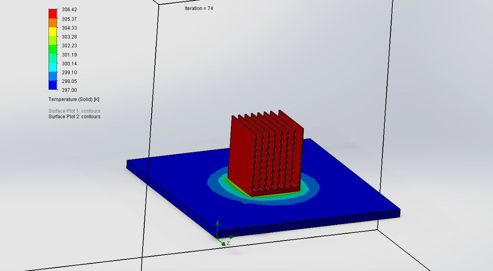

Heat Sink Design & CFD Validation
I validated a SolidWorks Flow Simulation model against a lab experiment, then used it to redesign an aluminum plate-fin heat sink for a lower base temperature.

Step 1: Make the simulation trustworthy
In the lab, the heat sink sat on a neoprene base in still air with a thin-film heater underneath supplying 0.976 W, and a thermistor recorded the base temperature until it reached steady state. I rebuilt the same setup in SolidWorks Flow Simulation and ran a mesh refinement study from about 4,600 to 266,000 cells, treating the model as converged once the average temperature stopped changing by more than about 0.5 K.
The level-4 mesh (about 58,000 cells) gave the best balance of accuracy and run time. It predicted 314.5 K against the measured 317.6 K, a 3.1 K difference, and its heat balance matched the experiment almost exactly.


| QUANTITY | EXPERIMENT | SIMULATION |
|---|---|---|
| Heater input | 0.976 W | 0.976 W |
| Heat dissipated | 0.936 W | 0.938 W |
| Average base temperature | 317.6 K | 314.5 K |
Step 2: Redesign the fins
With a validated model, I iterated on the geometry, building each design on the last. Removing three fins and widening the spacing to 3.31 mm let air move more freely between them. A thicker base barely helped. The big gain came from making the fins much taller (46 mm) and thinner (1 mm), which added convective surface area without crowding the airflow.

What I learned
A simulation is only useful once it has been checked against reality. Running the mesh study and matching the experiment first meant I could trust the small temperature differences between designs. The results also overturned my expectation: changing the base did little, while fin height and thickness drove almost all of the improvement.